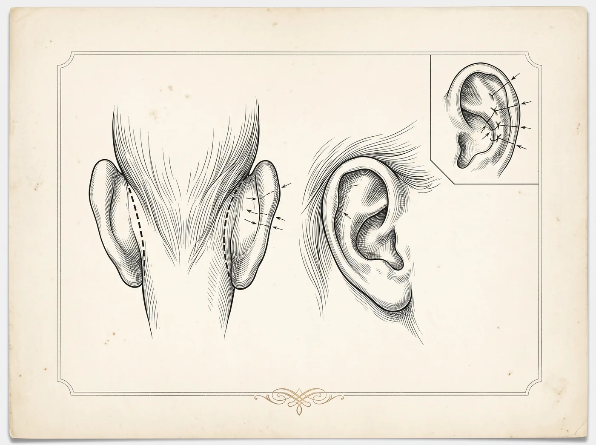

Face · Procedimento cirúrgico
A otoplastia ajusta a forma, a posição ou o tamanho das orelhas — mais frequentemente para corrigir orelhas proeminentes. Pode ser realizada em crianças a partir dos seis anos, quando a orelha já está formada, e também em adultos.

Objetivos do procedimento
Todo procedimento cirúrgico envolve riscos. A avaliação individual com um cirurgião plástico é indispensável para indicar o tratamento adequado a cada caso.
Perguntas frequentes
A partir dos seis anos, quando a orelha já atingiu a maior parte do seu desenvolvimento. A decisão envolve a família e a avaliação do cirurgião — inclusive sobre o desejo da própria criança.
Depende da idade e do caso: pode ser local com sedação ou geral. A definição é feita com o cirurgião e a equipe de anestesia.
A incisão costuma ser posicionada atrás da orelha, em área naturalmente escondida.
Em geral utiliza-se curativo nos primeiros dias e, depois, uma faixa de proteção — principalmente para dormir — pelo período orientado pelo cirurgião.
O próximo passo
A decisão certa nasce de uma boa conversa. Traga suas dúvidas: a avaliação individual é o primeiro passo de qualquer plano.